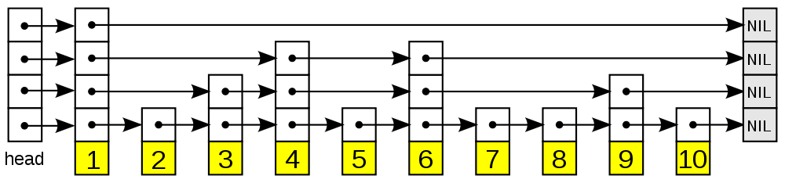

跳跃表¶
跳跃表（skiplist）是一种随机化的数据， 由 William Pugh 在论文《Skip lists: a probabilistic alternative to balanced trees》中提出， 跳跃表以有序的方式在层次化的链表中保存元素， 效率和平衡树媲美 —— 查找、删除、添加等操作都可以在对数期望时间下完成， 并且比起平衡树来说， 跳跃表的实现要简单直观得多。
以下是个典型的跳跃表例子（图片来自维基百科）：
从图中可以看到， 跳跃表主要由以下部分构成：
- 表头（head）：负责维护跳跃表的节点指针。
- 跳跃表节点：保存着元素值，以及多个层。
- 层：保存着指向其他元素的指针。高层的指针越过的元素数量大于等于低层的指针，为了提高查找的效率，程序总是从高层先开始访问，然后随着元素值范围的缩小，慢慢降低层次。
- 表尾：全部由
NULL组成，表示跳跃表的末尾。
因为跳跃表的定义可以在任何一本算法或数据结构的书中找到， 所以本章不介绍跳跃表的具体实现方式或者具体的算法， 而只介绍跳跃表在 Redis 的应用、核心数据结构和 API 。
跳跃表的实现¶
为了满足自身的功能需要， Redis 基于 William Pugh 论文中描述的跳跃表进行了以下修改：
- 允许重复的
score值：多个不同的member的score值可以相同。 - 进行对比操作时，不仅要检查
score值，还要检查member：当score值可以重复时，单靠score值无法判断一个元素的身份，所以需要连member域都一并检查才行。 - 每个节点都带有一个高度为 1 层的后退指针，用于从表尾方向向表头方向迭代：当执行 zrevrange 或 zrevrangebyscore 这类以逆序处理有序集的命令时，就会用到这个属性。
这个修改版的跳跃表由 redis.h/zskiplist 结构定义：
typedef struct zskiplist {
// 头节点，尾节点
struct zskiplistNode *header, *tail;
// 节点数量
unsigned long length;
// 目前表内节点的最大层数
int level;
} zskiplist;
跳跃表的节点由 redis.h/zskiplistNode 定义：
typedef struct zskiplistNode {
// member 对象
robj *obj;
// 分值
double score;
// 后退指针
struct zskiplistNode *backward;
// 层
struct zskiplistLevel {
// 前进指针
struct zskiplistNode *forward;
// 这个层跨越的节点数量
unsigned int span;
} level[];
} zskiplistNode;
以下是操作这两个数据结构的 API ，API 的用途与相应的算法复杂度：
| 函数 | 作用 | 复杂度 |
|---|---|---|
zslCreateNode |
创建并返回一个新的跳跃表节点 | 最坏 \(O(1)\) |
zslFreeNode |
释放给定的跳跃表节点 | 最坏 \(O(1)\) |
zslCreate |
创建并初始化一个新的跳跃表 | 最坏 \(O(1)\) |
zslFree |
释放给定的跳跃表 | 最坏 \(O(N)\) |
zslInsert |
将一个包含给定 score 和 member 的新节点添加到跳跃表中 |
最坏 \(O(N)\) 平均 \(O(\log N)\) |
zslDeleteNode |
删除给定的跳跃表节点 | 最坏 \(O(N)\) |
zslDelete |
删除匹配给定 member 和 score 的元素 |
最坏 \(O(N)\) 平均 \(O(\log N)\) |
zslFirstInRange |
找到跳跃表中第一个符合给定范围的元素 | 最坏 \(O(N)\) 平均 \(O(\log N)\) |
zslLastInRange |
找到跳跃表中最后一个符合给定范围的元素 | 最坏 \(O(N)\) 平均 \(O(\log N)\) |
zslDeleteRangeByScore |
删除 score 值在给定范围内的所有节点 |
最坏 \(O(N^2)\) |
zslDeleteRangeByRank |
删除给定排序范围内的所有节点 | 最坏 \(O(N^2)\) |
zslGetRank |
返回目标元素在有序集中的排位 | 最坏 \(O(N)\) 平均 \(O(\log N)\) |
zslGetElementByRank |
根据给定排位，返回该排位上的元素节点 | 最坏 \(O(N)\) 平均 \(O(\log N)\) |
跳跃表的应用¶
和字典、链表或者字符串这几种在 Redis 中大量使用的数据结构不同， 跳跃表在 Redis 的唯一作用， 就是实现有序集数据类型。
跳跃表将指向有序集的 score 值和 member 域的指针作为元素，
并以 score 值为索引，
对有序集元素进行排序。
举个例子， 以下代码创建了一个带有 3 个元素的有序集：
redis> ZADD s 6 x 10 y 15 z
(integer) 3
redis> ZRANGE s 0 -1 WITHSCORES
1) "x"
2) "6"
3) "y"
4) "10"
5) "z"
6) "15"
在底层实现中，
Redis 为 x 、 y 和 z 三个 member 分别创建了三个字符串，
值分别为 double 类型的 6 、 10 和 15 ，
然后用跳跃表将这些指针有序地保存起来，
形成这样一个跳跃表：
digraph zset { rankdir = LR; node [shape = record, style = filled]; edge [style = bold]; skiplist [label ="<head>zskipNode\n(head) |<3> |<2> |<1> |<score>score\n NULL |<robj>robj\n NULL", fillcolor = "#F2F2F2"]; six [label = "<head>zskipNode |<3> |<2> |<1> |<score>score\n 6 |<robj>robj\n x", fillcolor = "#95BBE3"]; ten [label = "<head>zskipNode | <1> |<score>score\n 10 |<robj>robj\n y", fillcolor = "#95BBE3"]; fiften [label = "<head>zskipNode |<3> |<2> |<1> |<score>score\n 15 |<robj>robj\n z", fillcolor = "#95BBE3"]; skiplist:3 -> six:3; skiplist:2 -> six:2; skiplist:1 -> six:1; six:1 -> ten:1; six:2 -> fiften:2; six:3 -> fiften:3; ten:1 -> fiften:1; null_1 [label = "NULL", shape=plaintext]; null_2 [label = "NULL", shape=plaintext]; null_3 [label = "NULL", shape=plaintext]; fiften:1 -> null_1; fiften:2 -> null_2; fiften:3 -> null_3; }
为了方便展示，
在图片中我们直接将 member 和 score 值包含在表节点中，
但是在实际的定义中，
因为跳跃表要和另一个实现有序集的结构（字典）分享 member 和 score 值，
所以跳跃表只保存指向 member 和 score 的指针。
更详细的信息，请参考《有序集》章节。
小结¶
- 跳跃表是一种随机化数据结构，查找、添加、删除操作都可以在对数期望时间下完成。
- 跳跃表目前在 Redis 的唯一作用，就是作为有序集类型的底层数据结构（之一，另一个构成有序集的结构是字典）。
- 为了满足自身的需求，Redis 基于 William Pugh 论文中描述的跳跃表进行了修改，包括：
score值可重复。- 对比一个元素需要同时检查它的
score和memeber。 - 每个节点带有高度为 1 层的后退指针，用于从表尾方向向表头方向迭代。

{kind=link}
{kind=link}